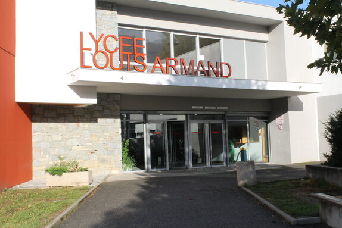

Journey
My Journey
After my diploma, I went to Louis Armand High School in Chambéry to follow the Engineering Sciences option in the second year. I liked this option, so I decided to continue my specialties in this field. Therefore, I chose mathematics, physics-chemistry, and engineering sciences as my specialties.Combining these subjects was enriching for me because I found a connection between each notion of the program, viewed from different angles: in mathematics, the theoretical side; in physics-chemistry, the practical side in real life; finally, in engineering sciences, the technical side, what we could do and create with these notions. I also joined the Euro-English physics option to develop my English skills.
In the final year, the Engineering Sciences option offered an additional 3 hours of physics to acquire the necessary physical foundations and notions. So, I decided to choose the Engineering Sciences option rather than the physics-chemistry option because the chemical aspect was not the mechanical side of science that I liked. Thus, I found my happiness in this Engineering Sciences option. I also chose the Expert Mathematics option to have a broader understanding of mathematics and discover new concepts. After passing my baccalaureate in 2023, I was accepted at IUT Colmar in Networks and Telecommunications, and since then, I have been pursuing this program.